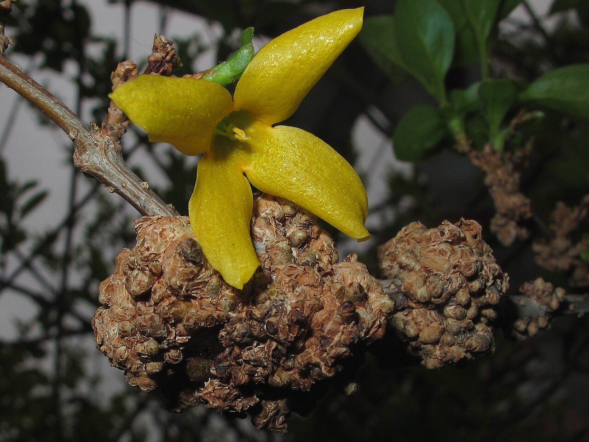

基因工程的基本操作程序（下）：导入、检测与鉴定
本期导读
基因工程的基本操作程序（下） · 农杆菌 · 电泳

视频原话 · 导读3 句
- 同学们好！这节课梳理人教版选择性必修三第三章第二节的下半部分——将目的基因导入受体细胞，以及目的基因的检测与鉴定。12.0s
- 高考常考农杆菌转化法的原理、不同受体细胞的导入方法，以及分子检测和电泳结果的判读。8.7s
- 我们按七个考点梳理，每个考点都讲清楚怎么考、怎么做。5.6s
导入植物细胞01#
农杆菌能侵染双子叶植物和裸子植物，对大多数单子叶植物无侵染能力；我国独创花粉管通道法
易错
目的基因要插在 T-DNA 内部，不是 Ti 质粒的任意位置；整合位置是植物细胞的染色体 DNA
视频原话5 句
- 考点一，将目的基因导入植物细胞。最常用的是农杆菌转化法。6.8s
- 农杆菌的Ti质粒上有一段T-DNA，它可以转移并整合到受体细胞的染色体DNA上。8.4s
- 所以把目的基因插入Ti质粒的T-DNA中，就能随T-DNA整合到植物细胞的染色体上。8.9s
- 农杆菌能侵染双子叶植物和裸子植物，对大多数单子叶植物没有侵染能力。我国科学家还独创了花粉管通道法。11.1s
- 易错：目的基因要插在T-DNA内部，不是Ti质粒的任意位置；整合的位置是植物细胞的染色体DNA。10.3s
导入动物细胞02#
提纯的基因表达载体
显微注射→
受精卵
早期胚胎
胚胎移植→
雌性动物输卵管或子宫
→
转基因动物
解题方法
为什么选受精卵？全能性最高，能发育成完整个体，且由它发育来的每个细胞都含有目的基因
视频原话4 句
- 考点二，将目的基因导入动物细胞。常用显微注射法。5.9s
- 受体细胞常用受精卵：将含有目的基因的表达载体提纯后，用显微注射仪注入受精卵中。8.6s
- 然后把受精卵培养成早期胚胎，再移植到雌性动物的输卵管或子宫内，发育成转基因动物。8.9s
- 考法：为什么用受精卵作受体？解题方法：受精卵全能性最高，能发育成完整个体，而且由它发育来的每个细胞都含有目的基因。12.6s
导入微生物细胞03#
原核生物作受体：繁殖快、多为单细胞、遗传物质相对较少
大肠杆菌
→
Ca2+ 处理
能吸收周围环境中 DNA 的状态
导入→
重组大肠杆菌
易错
大肠杆菌没有内质网、高尔基体，不能加工蛋白质；需要加工的蛋白质可选酵母菌等真核受体
视频原话4 句
- 考点三，将目的基因导入微生物细胞。原核生物常作受体，因为它们繁殖快、多为单细胞、遗传物质相对较少。11.0s
- 以大肠杆菌为例，一般先用Ca2+处理细胞，使细胞处于一种能吸收周围环境中DNA分子的生理状态。9.8s
- 再将重组的基因表达载体导入其中。3.7s
- 易错：大肠杆菌没有内质网和高尔基体，产生的蛋白质无法加工；需要加工的蛋白质，可以选酵母菌等真核生物作受体。11.3s
分子水平的检测04#
| 检测内容 | 检测对象 | 方法 |
|---|---|---|
| 染色体 DNA 上是否插入了目的基因 | DNA | PCR |
| 目的基因是否转录出了 mRNA | mRNA | PCR 等 |
| 目的基因是否翻译成蛋白质 | 蛋白质 | 抗原—抗体杂交 |
解题方法
按中心法则对号入座：DNA、mRNA 用 PCR，蛋白质用抗原—抗体杂交
视频原话4 句
- 考点四，分子水平的检测。第一查：受体细胞的染色体DNA上是否插入了目的基因，用PCR检测。10.6s
- 第二查：目的基因是否转录出了mRNA，也用PCR等技术检测。6.8s
- 第三查：目的基因是否翻译成蛋白质，用抗原—抗体杂交检测。6.6s
- 解题方法：按中心法则对号入座——DNA和mRNA用PCR，蛋白质用抗原—抗体杂交。9.6s
个体水平的鉴定05#
分子检测成功 ≠ 基因工程成功，还要在个体水平上鉴定
抗虫接种实验
如抗虫棉：看棉花是否具有抗虫特性
抗病接种实验
抗病植物：接种病原体，看是否抗病
活性比较
与天然产品的功能活性比较
易错
检测到目的基因甚至蛋白质，不等于获得了所需性状；最终要在个体水平上鉴定
视频原话4 句
- 考点五，个体生物学水平的鉴定。分子检测成功，还不能说明基因工程就成功了。8.1s
- 比如抗虫棉，要做抗虫接种实验，看棉花是否具有抗虫特性。6.2s
- 抗病植物做抗病接种实验；基因工程产品还要与天然产品的功能活性进行比较。8.0s
- 易错：检测到目的基因甚至蛋白质，不等于获得了所需性状；最终要在个体水平上鉴定。8.9s
DNA片段的扩增06#
缓冲液
→
模板 DNA
→
引物
→
4 种脱氧核苷酸
→
耐高温的 DNA 聚合酶
PCR 仪
→
变性 → 复性 → 延伸
循环扩增
DNA 带负电荷，在电场中向正极移动
迁移速率与凝胶浓度、DNA 分子大小和构象有关；分子越小，迁移越快
易错
加样孔放在负极一侧；离心管、枪头和蒸馏水都要高压灭菌
视频原话5 句
- 考点六，实验：DNA片段的扩增及电泳鉴定。在微量离心管中依次加入缓冲液、模板DNA、引物、4种脱氧核苷酸和耐高温的DNA聚合酶。15.0s
- 放入PCR仪中，按照变性、复性、延伸的程序循环扩增。6.1s
- 电泳鉴定：DNA分子带负电荷，在电场中向正极移动。5.8s
- 在凝胶中，DNA分子的迁移速率与凝胶浓度、DNA分子大小和构象有关；分子越小，迁移越快。9.7s
- 易错：加样孔要放在负极一侧；用到的离心管、枪头和蒸馏水都要高压灭菌。7.8s
电泳结果的判读07#
第 1 泳道：标准参照物，用来估计片段大小
离加样孔越远，DNA 分子越小；越近，越大
样品条带与目的基因大小一致 → 扩增成功 / 含目的基因
阳性对照：以目的基因为模板；阴性对照：不加模板或用非转基因材料
解题方法
先看标准参照物定大小，再看对照排除污染，最后比较样品条带的位置
视频原话5 句
- 考点七，电泳结果的判读。第一个泳道通常是标准参照物，也叫DNA分子标准，用来估计片段的大小。10.6s
- 离加样孔越远的条带，DNA分子越小；离加样孔越近，DNA分子越大。7.5s
- 样品条带与目的基因的大小一致，说明扩增成功，或者受体中含有目的基因。7.5s
- 还要设置阳性对照和阴性对照：阳性对照以目的基因为模板，阴性对照不加模板或用非转基因材料。9.9s
- 解题方法：先看标准参照物定大小，再看对照排除污染，最后比较样品的条带位置。8.3s
易错速查✓
先自己判断，再点按钮查看对错与解析。
- 1农杆菌转化时目的基因插入Ti质粒的T-DNA中说法正确。
- 2培育转基因动物常以体细胞为受体细胞说法错误：常用受精卵作受体细胞
- 3Ca2+处理大肠杆菌使其处于易吸收DNA的状态说法正确。
- 4检测目的基因是否翻译用PCR说法错误：检测蛋白质用抗原—抗体杂交
- 5检测出目的基因就说明基因工程成功说法错误：还要看是否表达并有个体性状
- 6电泳时DNA分子越小，迁移越快说法正确。
分子三查 PCR 加杂交，个体再看性状！
视频原话 · 易错速查5 句
- 最后，用六道判断题检验一下。3.6s
- 判断一：农杆菌转化时目的基因插入T-DNA中？对。判断二：培育转基因动物常以体细胞为受体？错，用受精卵。12.9s
- 判断三：Ca2+处理大肠杆菌使其易吸收DNA？对。判断四：检测是否翻译用PCR？错，用抗原—抗体杂交。12.7s
- 判断五：检测出目的基因就说明成功？错，还要个体鉴定。判断六：电泳时DNA分子越小迁移越快？对。12.0s
- 七个考点串成一条线：分子三查PCR加杂交，个体再看性状。我们下期再见！8.4s
图片来源
图片来源：Wikimedia Commons —— jacilluch《Agrobacterium tumefaciens - Agalla de la corona》CC BY-SA 2.0
Photo: jacilluch, CC BY-SA 2.0